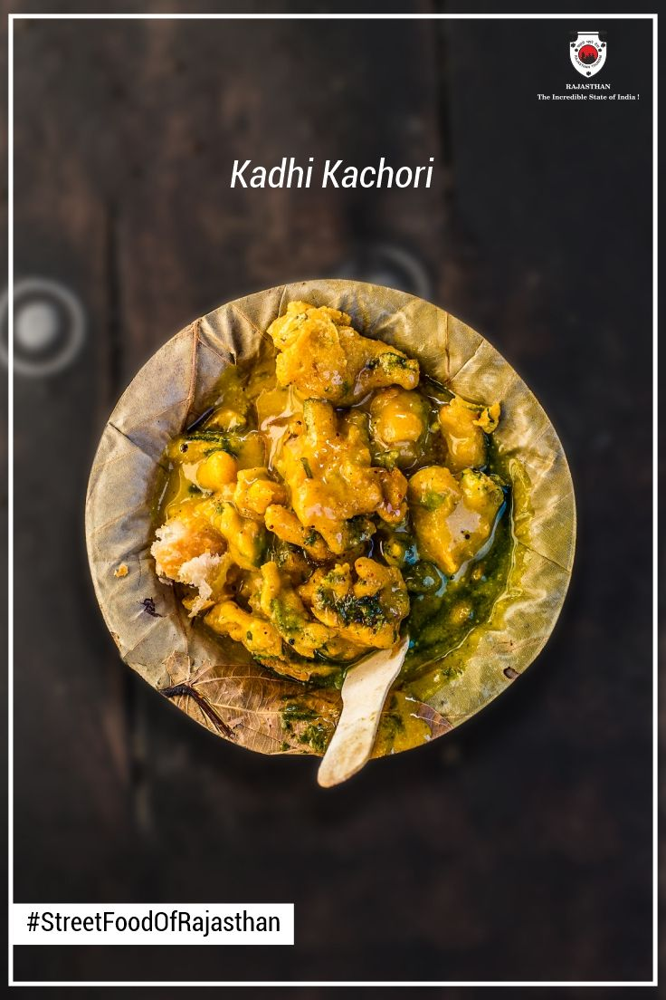
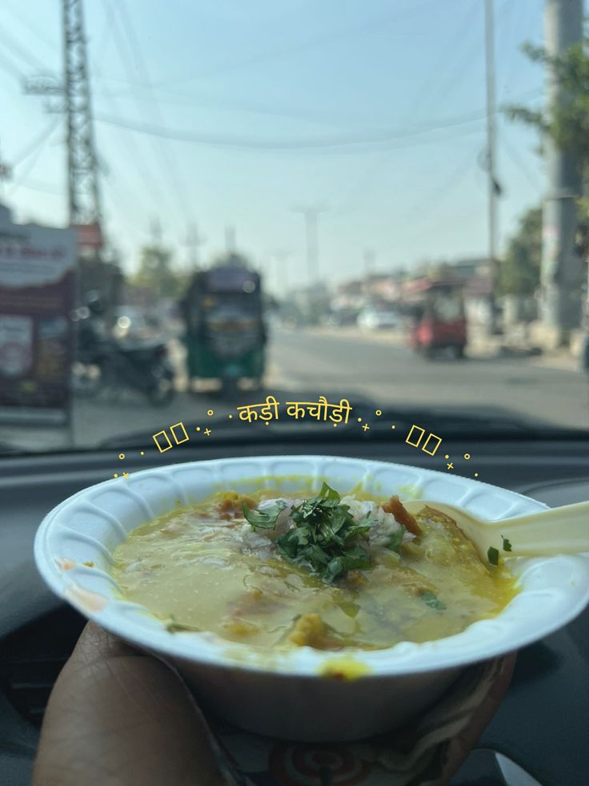

Pink city's favourite and loved by everyone. From the vibrant streets of Jaipur, this crispy and tangy delight brings together tradition and bold flavors in every bite. When we were kids, my grandfather used to bring this for me and my brother whenever we had a fight or threw tantrums about not eating healthy. He would loosen the discipline for a while and bring us this delicious kadhi kachori. It’s even more special to me because it is connected to a very beautiful part of my life. Let’s learn how we make it.
Preparation Time: 40 minutes
Difficulty: Medium
Be careful: Do not over-soak kachori or it will become soggy.
Too hot to handle, too tasty to stop 😏